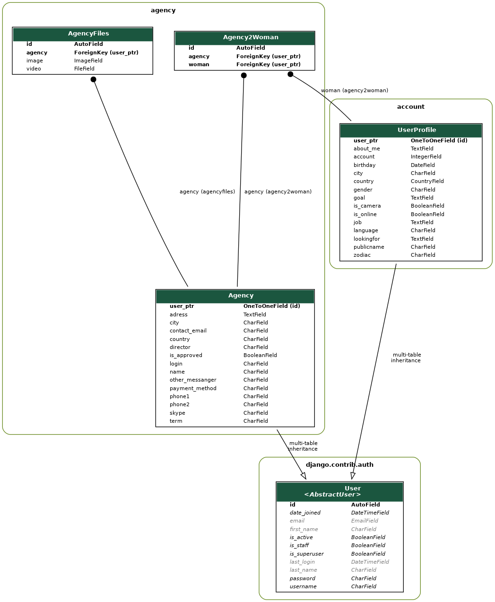

4. Agency model¶
- environment
A structure where information about all documents under the root is saved, and used for cross-referencing. The environment is pickled after the parsing stage, so that successive runs only need to read and parse new and changed documents.
- source directory
The directory which, including its subdirectories, contains all source files for one Sphinx project.
|
|
|